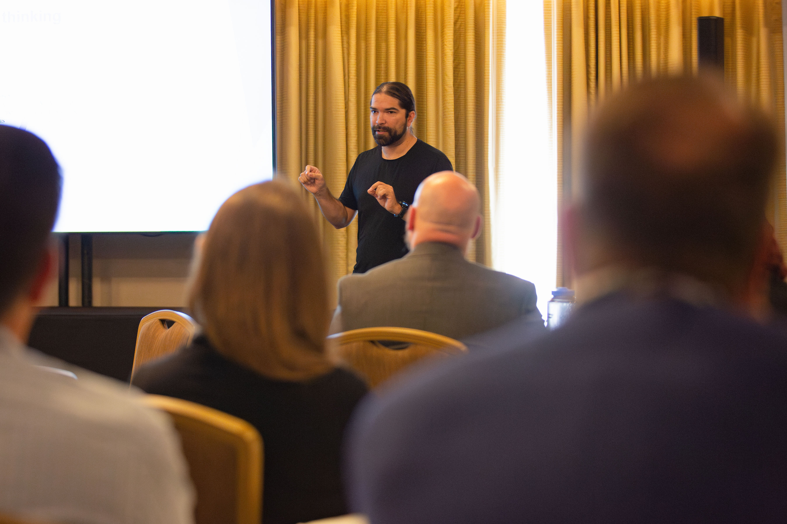

Training & Institutional Leadership
Core Expertise & AI Integration
I regularly facilitate cross-departmental and cross-institutional projects, leverage Prosci Change Management, and apply Lean Six Sigma (LSS) methodologies to support change initiatives campus-wide.
After developing an introductory AI Module available to all UCSD staff, my current focus centers on blending Lean Six Sigma and AI to ensure teams reach optimal benefits from each tool set.
Photo Highlights
Scroll horizontally to view photos:

Presenting Keynote (Wide View)

Youth Volunteering: Scout Leader

Early Community & Cultural Ties (Charro Suit)
Community AI Workshops & Outreach
Passionate about making technology accessible, I deliver complimentary presentations at local public libraries to demystify artificial intelligence for the general public.
Public Library AI Sessions
These free sessions focus on practical introductory AI skills, covering foundational concepts, effective prompt engineering, and basic AI agent building to help community members leverage AI tools in their daily lives.
Education & Certifications
- Lean Six Sigma Black Belt – UC San Diego Extension
- Prosci Change Management Certified
- PMP Certified – Coursera
- Process Mapping Certified – Nintex (Promapp)
- Bachelor of Arts in Theater Arts – UC San Diego
Beyond the Office
Outside of work, I spend my time volunteering with youth organizations and cycling. When possible, I donate my ponytail to Locks of Love, a 501(c)(3) nonprofit that supports a sense of self and normalcy in children suffering from hair loss.